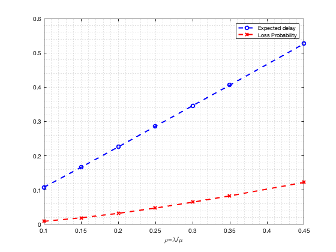
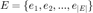
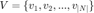
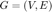
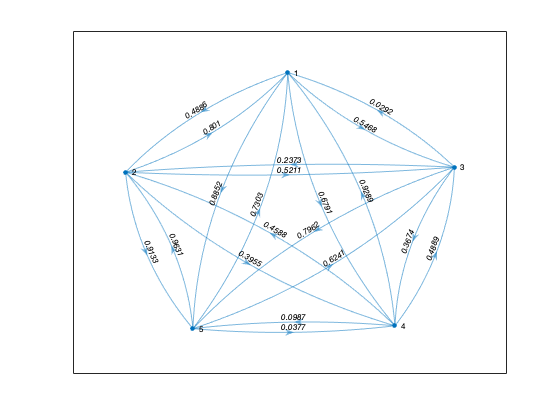
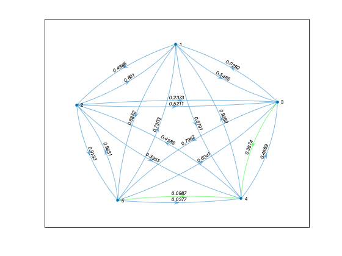
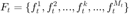
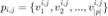
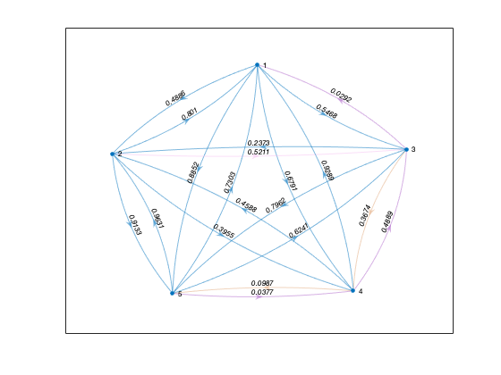

Contents
- Project Security aware routing in SDN networks
- Clean slate
- Model of the SWs
- Analysis for a single SWn with different parameters
- Network graph
- Shortest path
- Flows in the network
- Network of M/M/1/k SWs
- Expected Total end to end flow of each flow
- Expected Total loss traffic in the network
- MDP model
- Reward function
Project Security aware routing in SDN networks
Run this project using the option Publish Starts: 11 march 2022
% Paper: Kim et al. Deep Reinforcement learning-based Routing on Software % defined networks.
Clean slate
clear
close all
Model of the SWs
SW model: M/M/1/k

Parameters M: Arrival process have Poisson distribution, M: Service process have Poisson distribution, 1: One server, k: Length of the server queue: Capacity
clc lambda_n_t = 10; % rate of arrivals for SWn at t=t mu_n = 15; % rate of service for SWn : constant rho_n_t = lambda_n_t/mu_n; % ratio mandatory 0<rho_n_t<=1 Kn = 10; % capacity of SWn: constant % % Expected delay E[dn(t)] for SWn at t=t E_d_n_t = 0; % initial value % Probability of loss a flow due to overflow for SWn at t=t P_b_n_t = 0; % M/M/1/k model for SW nx at time t [E_d_n_t, P_b_n_t] = M_M_1_k_t(Kn,lambda_n_t,mu_n);
Analysis for a single SWn with different parameters
close all clc lambda_n_t = sort(randi([0 10],1,10)); % U(0,10) mu_n = 20; Kn = 2; rho_n_t = lambda_n_t/mu_n; % mandatory 0<rho_n_t<=1 mmk1 = zeros(length(rho_n_t),2); for i=1:length(rho_n_t) [E_d_n_t, P_b_n_t] = M_M_1_k_t(Kn,lambda_n_t(i),mu_n); mmk1(i,:) = [E_d_n_t, P_b_n_t]; end plot(rho_n_t,mmk1(:,1),'b--o','LineWidth',2); hold on plot(rho_n_t,mmk1(:,2),'r--x','LineWidth',2); xlabel('\rho=\lambda/\mu') legend('Expected delay','Loss Probability') grid('minor')
Network graph
 : Directional Link
 : Node
 : Graph
close all N = 5; % number of edges A = ones(N); % Adjacency matrix (edges or links) % W = -0 + (0+1)*rand(N); % Weight: initial values Uniform distribution(0,1) W = [0.2625 0.4886 0.5468 0.6791 0.8852 0.8010 0.5785 0.5211 0.3955 0.9133 0.0292 0.2373 0.2316 0.3674 0.7962 0.9289 0.4588 0.4889 0.9880 0.0987 0.7303 0.9631 0.6241 0.0377 0.2619]; G = digraph(W, 'omitSelfLoops'); g = plot(G,'Layout','force','EdgeLabel',G.Edges.Weight);
Shortest path
close all i = 3; % node i src j = 5; % node j dst [pij,cij] = shortestpath(G,i,j); g = plot(G,'Layout','force','EdgeLabel',G.Edges.Weight); highlight(g,pij,'EdgeColor','g');
Flows in the network
 : Flow in the network
: Shortest path for a pair of nodes i,j
% Create 100 flows arbitrary clc Mt = 10; F_t=randi([1 N],Mt,2); F_t(F_t(:,1)==F_t(:,2),:)=[]; % avoid internal flows Mt = length(F_t); Lambda_k_t = -0 + (0+1)*rand(Mt); % Poisson arrivals of each flow fk
Network of M/M/1/k SWs
clc close g = plot(G,'Layout','force','EdgeLabel',G.Edges.Weight); % % Parameters of SWs lambda_n_t = randi([10 15],N,1); % rate of arrivals for SWn at t=t mu_n = randi([15 20],N,1); % rate of service for SWn : constant rho_n_t = lambda_n_t./mu_n; % ratio mandatory 0<rho_n_t<=1 Kn = randi([12 20],N,1); % capacity of SWn: constant % Shortest paths for each fk in F pij_k = {}; for k=1:Mt i = F_t(k,1); j = F_t(k,2); [pij,cij] = shortestpath(G,i,j); pij_k{k} = pij; highlight(g,pij,'EdgeColor',rand(1,3)); end
Expected Total end to end flow of each flow
De2ek = zeros(1,Mt); D_e2e_avg_t = 0; for k=1:Mt % for each flow pij = pij_k{k}; D_e2e_k_t = 0; for n=1:length(pij) % for each SWn in path for fk [E_d_n_t, P_b_n_t] = M_M_1_k_t(Kn(pij(n)),lambda_n_t(pij(n)),mu_n(pij(n))); % delay at SWn D_e2e_k_t = D_e2e_k_t + E_d_n_t; end D_e2e_avg_t = D_e2e_avg_t + D_e2e_k_t/length(pij); end D_e2e_avg_t = D_e2e_avg_t/Mt
D_e2e_avg_t =
3.0509
Expected Total loss traffic in the network
E_L_total_n_t = 0; for n=1:N [E_d_n_t, P_b_n_t] = M_M_1_k_t(Kn(n),lambda_n_t(n),mu_n(n)); % delay at SWn E_L_total_n_t = E_L_total_n_t + P_b_n_t*lambda_n_t(n); end E_L_total_n_t
E_L_total_n_t =
0.2574
MDP model
state representation Observations from the SWn {Kn, Nn_t, lambda_n_t, L_n_t, rho_n_t, d_n_t} time: time step Kn: Capacity of SWn Nn_t: Quee ocupation at t lambda_n_t: Aggregate arrival rate at t L_n_t: Espected loss traffic at t; is it calculated? Using M/M/1/k model? rho_n_t: Utilization of SWn at t d_n_t: Expected delay at t; is it calculated? Using M/M/1/k model?
Get state st s_t = {s_ij_t|ij in V} (ij) = {(v1,v2),(v1,v3),...,(v2,v1),(v2,v3), ...}
clc G; % directed graph Edges = G.Edges; st = zeros(N); for iRow = 1:height(Edges) link_ij = Edges.EndNodes(iRow,:); i = link_ij(1); j = link_ij(2); sij_aux = 0; for k=1:Mt src_fk = F_t(k,1); dst_fk = F_t(k,2); [p_fk,c_fk,edgepath_fk] = shortestpath(G,src_fk,dst_fk); % shortest path p_fk for fk (includes src_fk and dst_fk) links_fk = G.Edges(edgepath_fk,:); for iRow = 1:height(links_fk) % for each link of fk links_fk that crosses the shortest path p_fk if(link_ij==links_fk(iRow,:).EndNodes) x_ij_t = 1; % 1 whether link vi to vj is included in the path through wich fk is transmited. [E_d_n_t, P_b_i_t] = M_M_1_k_t(Kn(i),lambda_n_t(i),mu_n(i)); [E_d_n_t, P_b_j_t] = M_M_1_k_t(Kn(j),lambda_n_t(j),mu_n(j)); lambda_k_t = Lambda_k_t(k); lambda_ki_t = ((1-P_b_i_t)*lambda_k_t)*(1-P_b_j_t)*lambda_k_t; sij_aux = sij_aux + lambda_ki_t; end end end mu_max = max(mu_n); s_ij_t = min(1,sij_aux/mu_max); st(i,j)= s_ij_t; end st
st =
0 0 0 0 0
0 0 0.0148 0 0
0.0472 0 0 0.0717 0
0 0 0.0373 0 0.0823
0 0 0 0.0327 0
Reward function
clc sum_den = 0; for i=1:height(Edges) [p_fk,c_fk,edgepath] = shortestpath(G,Edges.EndNodes(i,1),Edges.EndNodes(i,2)); for j=1:length(p_fk) sum_den = sum_den + Kn(p_fk(j))/mu_n(p_fk(j)); end end rd_t = 1-D_e2e_avg_t/sum_den; % Delay performance reward rp_t = 1 - E_L_total_n_t/sum(lambda_n_t); % Flow loss reward % Total reward alpha = 0.6; R_st_at = alpha*rd_t + (1-alpha)*rp_t;